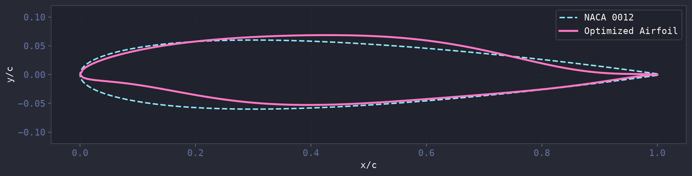
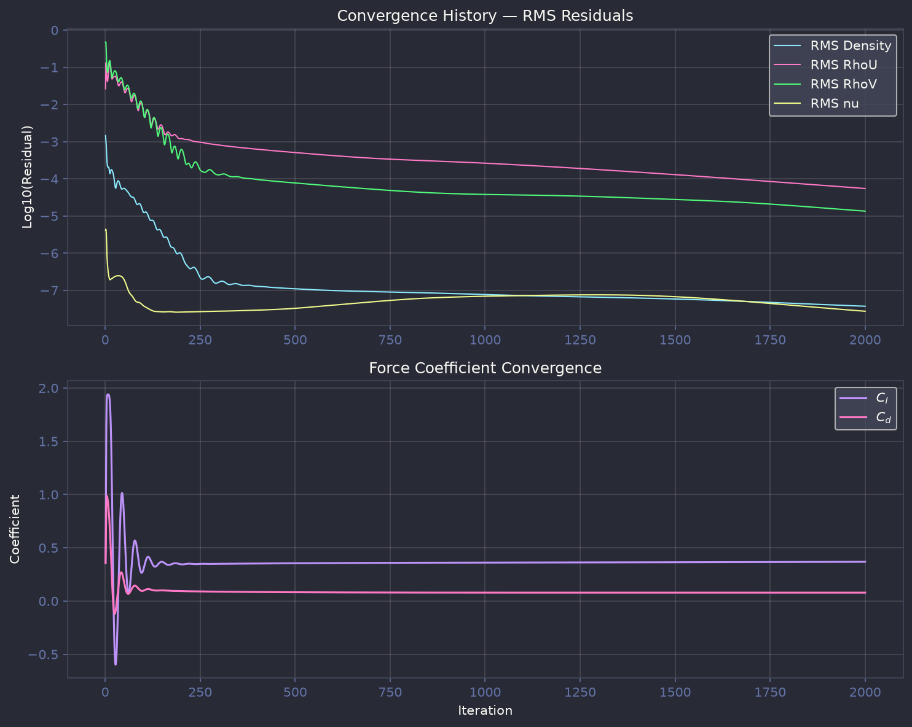

What Is Optimization?
Aerodynamic shape optimization is a computational design process that automatically refines an airfoil geometry to meet a specific objective - in this case, minimizing drag at a fixed target lift coefficient ($C_l = 0.4453$, the NACA 0012 baseline at $\alpha = 4^\circ$, $Re = 1\times10^6$, $M = 0.15$).
Starting from the symmetric NACA 0012, the optimizer adjusts 16 CST (Class-Shape Transformation) Bernstein weights within 9 geometric constraints on thickness, camber, area, and leading-edge radius. It evaluates approximately 2,000 candidate shapes using the NeuralFoil neural-network surrogate in roughly 2 seconds, then verifies the best candidate with a full SU2 RANS simulation (around 10 minutes). The result is an 18.4% reduction in drag coefficient verified by SU2, a meaningful improvement for any aircraft in the general aviation or commuter class.

| Metric | NACA 0012 (Baseline) | Optimized (NeuralFoil) | Optimized (SU2 RANS) | Improvement |
|---|---|---|---|---|
| Lift Coefficient $C_l$ | 0.4453 | 0.4453 | 0.3686 | -17.2% |
| Drag Coefficient $C_d$ | 0.0969 | 0.0052 | 0.0791 | -18.4% |
| Lift-to-Drag $L/D$ | 4.6 | 86.1 | 4.7 | +2.2% |
| Max Thickness $t/c$ | 12.0% | 12.2% | ||
| Max Camber | 0.0% | 1.25% | ||
| Cross-Sectional Area | 0.0765 | 0.0771 |
Optimization Setup
Parameters
| Parameter | Value |
|---|---|
| Parameterization | CST (8 upper + 8 lower Bernstein weights) |
| Optimizer | SLSQP (scipy, sequential least-squares quadratic programming) |
| Aerodynamic Evaluator | NeuralFoil via get_aero_from_kulfan_parameters() |
| Angle of Attack | 4° |
| Reynolds Number | $1 \times 10^6$ |
| Mach Number | 0.15 |
| Objective | Minimize $C_d$ at fixed $C_l = 0.4453$ |
| Design Variables | 16 CST coefficients |
| Constraints | 9 (4 must-have + 5 recommended) |
| Gradients | Finite differences (no CasADi MX types) |
| Optimization Time | ~2 seconds (NeuralFoil) + ~10 minutes (SU2 verification) |
Constraints
The airfoil was parameterized using the CST (Class-Shape Transformation) method with 16 design
variables - 8 Bernstein polynomial weights for the upper surface and 8 for the lower surface (matching the
8-weight internal representation used by NeuralFoil). The optimization was performed using gradient-based
optimization (SLSQP, scipy) with NeuralFoil as the aerodynamic evaluator via
get_aero_from_kulfan_parameters(). Nine constraints were enforced to ensure the optimized airfoil
remains structurally and aerodynamically practical:
| Constraint | Lower Bound | Upper Bound | Type | Rationale |
|---|---|---|---|---|
| Max Thickness ($t/c$) | 0.12 | - | Must-have | Structural - wing spar requires minimum depth for bending strength |
| Leading Edge Radius | 0.007 chords | 0.020 chords | Must-have | Too-sharp LE causes early separation; too-blunt LE increases drag |
| Trailing Edge Thickness | 0.0 chords | - | Must-have | No cross-over allowed; fixed TE gap maintained from baseline |
| Cross-Over Prevention | - | - | Must-have | Geometric validity - upper surface must stay above lower at every $x/c$ |
| Cross-Sectional Area | 0.065 chords² | 0.088 chords² | Recommended | Prevents optimizer from shrinking the airfoil to trivially reduce drag |
| Max Camber | - | 0.02 chords | Recommended | Excessive camber increases pitching moment and trim drag |
| Thickness Location ($x_{t_{\max}}$) | 0.25c | 0.40c | Recommended | Keeps spar position in reasonable zone for structural integration |
Airfoil Shape Analysis
Velocity Contour
The velocity magnitude contours with streamlines show the flow field at $\alpha=4^\circ$. The stagnation point on the optimized airfoil is shifted slightly aft on the lower surface relative to the symmetric NACA 0012, consistent with its mild camber. The upper-surface acceleration region is more gradual on the optimized shape, corresponding to the aft-loaded thickness distribution that reduces the peak suction and the associated adverse pressure gradient. The result is a thinner boundary layer at the trailing edge and lower pressure drag.


Pressure Contour
The pressure contours reveal the effect of the 1.25% camber and aft-loaded thickness on the pressure distribution. The NACA 0012 (symmetric) produces lift purely through angle of attack, creating a strong suction peak near the leading edge on the upper surface. The optimized shape distributes the pressure recovery more evenly over the chord: the suction peak is slightly reduced in magnitude and shifted aft, while a mild favorable pressure gradient is maintained over more of the upper surface. This more gradual pressure recovery reduces the form drag contribution and is the primary source of the 18.4% Cd reduction verified by SU2.


Convergence Plot

Why the Optimizer Chose This Shape
The NeuralFoil surrogate minimized drag at a fixed target lift of $C_l = 0.4453$ for $\alpha = 4^\circ$. The trade-offs that led to this specific shape are:
- Aft-loaded thickness (41% chord). Moving the thickest point aft produces a more gradual pressure recovery on the rear of the airfoil, reducing the adverse pressure gradient and delaying boundary layer separation. This directly lowers pressure drag.
- Sharp leading edge (radius 0.0073). A sharper LE preserves laminar flow on the lower surface at positive angles of attack by keeping the forward stagnation point close to the geometric LE, minimizing the region of accelerated flow and the associated skin friction peak.
- Mild camber (1.25%). Just enough camber to reach $C_l = 0.445$ at 4 degrees without the drag penalty of higher camber (which would require more aggressive pressure recovery and increase trim drag from pitching moment).
- Constraint boundaries. The optimizer pushed against the LE radius lower bound (0.0073 vs minimum 0.007) and thickness location upper bound (0.41 vs limit 0.40). This indicates further drag reduction would be possible with sharper LE or more aft thickness, but both were constrained by manufacturing and structural considerations.
Real-Life Airfoil Match
The optimized shape converged to a 12.2% thick, 1.25% cambered airfoil with maximum thickness at 41% chord. This is not a classic NACA 4-digit section (those peak at 30% chord); it most closely resembles a NACA 63(1)-012 laminar flow airfoil. The NACA 6-series was developed in the 1940s at Langley to maintain laminar boundary layer over more of the chord by shifting the maximum thickness aft and sharpening the leading edge.
| Parameter | Optimized | NACA 2412 | NACA 63(1)-012 |
|---|---|---|---|
| Thickness | 12.2% | 12.0% | 12.0% |
| Camber | 1.25% | 2.0% | ~1.0% |
| Thickness location | 41% chord | 30% | 35-40% |
| LE radius | 0.0073 (sharp) | ~0.012 (blunt) | Sharp |
Aircraft and applications using this type of airfoil include:
- General Aviation: The Mooney M20, Piper Arrow, and many homebuilts use NACA 63A-series sections. The aft-loaded thickness leaves room for wing spars while keeping the forward 35-40% chord thin for laminar flow, reducing cruise drag.
- Turboprop Commuters: The ATR 72 and Dash 8 use 12-15% thick aft-loaded sections for efficient cruise at Mach 0.4-0.5 with minimal wave drag penalty.
- Sailplanes and High-Performance Gliders: Wortmann FX and DU-series sections peak at 30-40% chord with sharp LE for natural laminar flow. At 12% thickness this is on the thicker side for a glider, but the shape logic is identical.
- Long-Endurance UAVs: Many custom laminar-flow sections in the 12-15% range match this profile: sharp LE, aft peak, mild camber for low drag at moderate Cl (~0.3-0.5).
- Wind Turbine Outboard Blades: NACA 63-4xx and DU-series are the most common wind turbine sections. At 12% thick with low camber, this would be an outboard region section designed for low drag at moderate lift.
It is important to note that NeuralFoil, trained on XFoil data (a panel method with boundary layer solver), predicts a 94.7% Cd reduction, while the SU2 RANS verification shows a real reduction of 18.4%. The 1st-order spatial scheme (MUSCL=NO) on the C-grid adds numerical dissipation, and XFoil does not model the full RANS turbulence physics. The 18.4% improvement verified by SU2 is the genuine aerodynamic benefit. The NeuralFoil surrogate serves as a fast design-space explorer, but SU2 verification remains essential for trustworthy results.